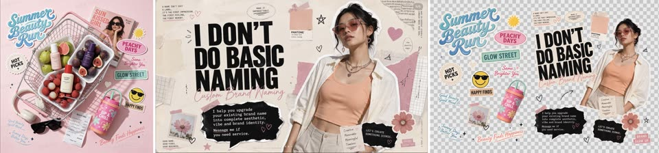

Seedream 5.5 (official): image-to-RGBA sticker extraction, two collage boards to one transparent sticker sheet

The official image-to-RGBA example from BytePlus's Seedream 5.5 tutorial: two busy pink scrapbook-style boards (a "Summer Beauty Run" flat-lay and an "I DON'T DO BASIC NAMING" brand-naming poster) go in, and one transparent PNG comes out with every sticker, label and cut-out figure separated, edges intact and the original text and colours preserved. The prompt is a model for asset-extraction requests: name the sources ("Image 1 and Image 2"), the output ("one transparent-background image"), what to preserve (text, colours, shapes, details), what to remove (all background), and layout rules ("separately without overlap, with sharp and intact edges"). Useful for building sticker packs, ad overlays and social-graphics kits from existing layouts. Seedream 5.5 accepts up to 10 reference images for image-to-RGBA.
Prompt
Extract the sticker elements from Image 1 and Image 2 separately, then place all extracted stickers in one transparent-background image. Preserve each sticker's original text, colors, shapes, and details; remove all background content other than the stickers. Arrange the stickers separately without overlap, with sharp and intact edges.
Tags: native RGBA, image-to-RGBA, sticker extraction, transparent background, multi-image input, preserve text and colours, asset kit, official example, Seedream 5.5